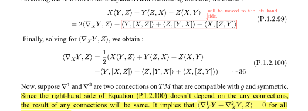
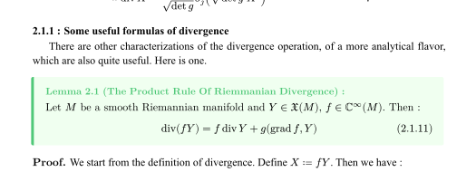
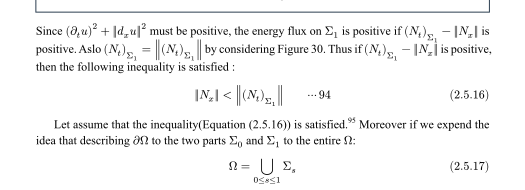
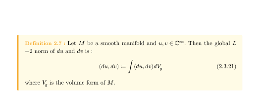
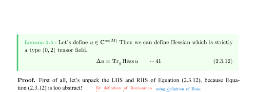
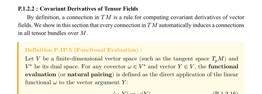
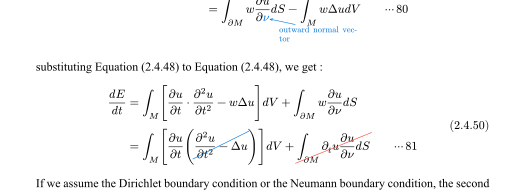
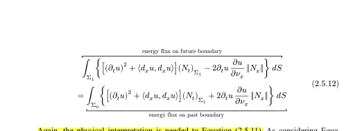
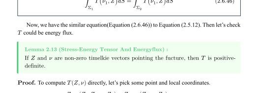
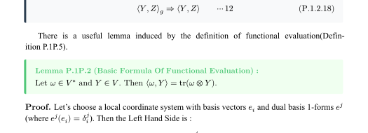

1
Koszul formula8 mentions · page 39

Rankings are regenerated from the compiled Typst document on every GitHub Pages deployment.
Measured by the number of pages until the next level-two section.
Only resolved global references count. Each preview is the content the tag points to.









